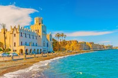
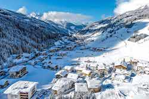
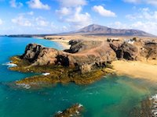
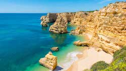

Europa
Snel en eenvoudig een reis in Europa boeken? Hier vindt u onze top vakantiebsetemmingen in Europa. We hebben speciaal voor u met onze vakantie-experts de beste en mooiste plaatsen uitgezocht, gegarandeerd de beste prijzen! Laat u verwennen in luxe of bent u juist toe aan een uitdagende reis? Met behulp van deze website is uw vakantie zo gepland!
Kos-Stad
Boek nu een zonnige trip naar Kos-Stad, in Griekenland. Kos-Stad is de gezellige hoofdstad van het eiland Kos. Het is weliswaar een stad maar geeft een sfeer van een gezellige, dorpse badplaats. In de stad bevinden zich leuke restaurantjes met heerlijke plaatselijke maaltijden aan het water. Kos-Stad heeft een culturele centrum met markten en boektiekjes. Je bevindt je dus midden in de cultuur van Kos-Stad. Als je hier ook komt voor luxe en comfort, bevindt er ook in Kos-Stad de meest beroemde stranden van Kos.
Heeft u interesse? Boek nu een ALL-in Hotel in Kos-Stad v.a. €399 p.p.
Gerlos
Wilt u liever een sportieve vakantie tussen de sneeuw en de bergen? Dan hebben wij een geweldige bestemming in Europa! Boek nu een winterse trip naar Gerlos, Oostenrijk. Gerlos is een van de meest bekende en populaire bestemmingen voor een winterportvakantie in Oostenrijk en is een van de meest hooggelegen plaatsen in het Zillertal. In Gerlos bevinden veel plaatselijke restaurants, winkels, sportieve faciliteiten en ook uitgaansgelegenheden.
Snel deze reis boeken? Boek nu een accomodatie v.a. €299 p.p.
Lanzarote
Vroeg een zonnige vakantie in Europa boeken? Pak nu deze reis naar Lanzarote, Spanje. Verblijf in een van de appartementen in een prachtige vakantieverblijf. De vakantieverblijven hebben vele grote zwembaden, netjes verzorgden appartementen en ze bieden lekkere plaatselijke eten aan. In de prachtige omgevig is er veel te beleven. De vakantieverblijven bevinden zich op loopasftand van de grote dichtsbijzijnde stranden waar u ook de plaatselijke restaurants en boetiekjes kunt bezoeken.
Mis deze vroegboek deal niet! Boek deze reis nu v.a. €409 p.p.
Algarve
Vertrek binnen 6 weken naar zon! Boek nu een reis naar Algarve, Portugal. Dit comfortabele vakantieadres biedt u een echte zomerse vakantie gevoel met zon, plaatselijke eten en goed verzorgde hotelkamers en/of appartementen. In Algarve bevinden zich stranden, restaurants, winkels en een centrum.
Binnen 6 weken een zonvakantie? Mis deze kans niet! Boek nu deze reis v.a. €149 p.p.